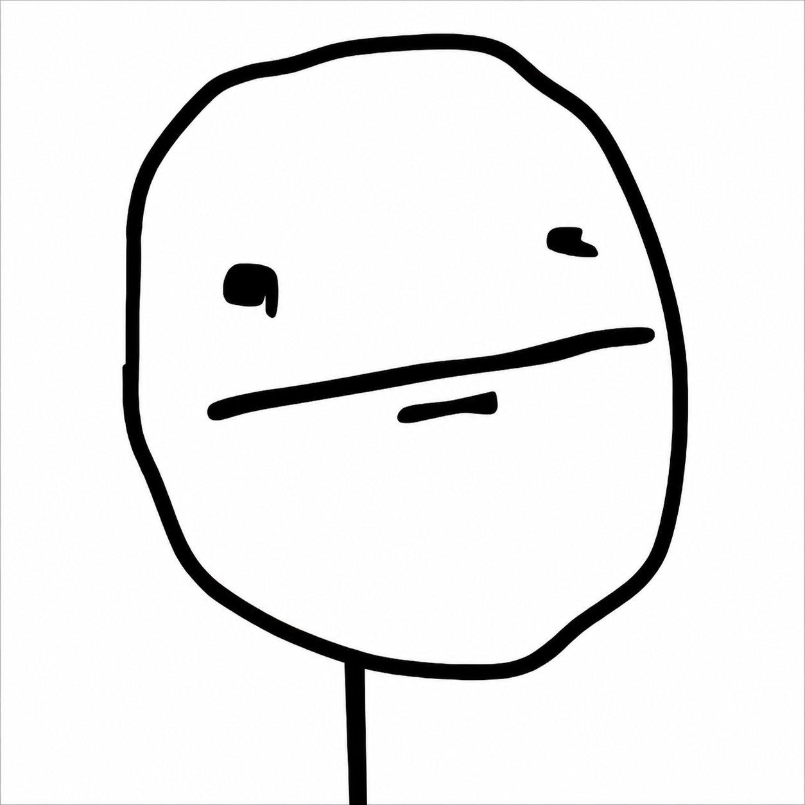
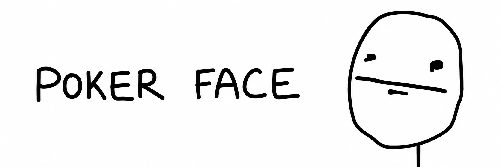
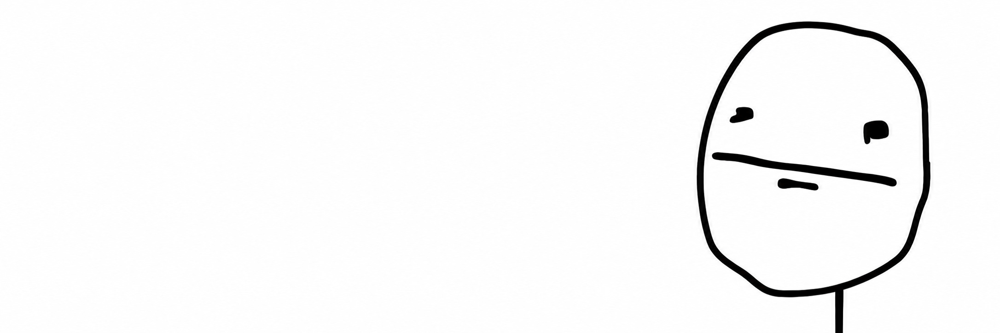

if $TROLL touched $110M
the OG meme meta is still alive
launching $POKERFACE under classic internet culture
Poker Face is one of those old internet drawings that never needed a caption. The blank stare, the straight mouth, the zero reaction.
It was made for every moment when everyone else is loud and the only correct answer is to keep the same face.
$POKERFACE brings that early-web energy back into the meme coin meta: simple, ugly, honest, and instantly recognizable.
